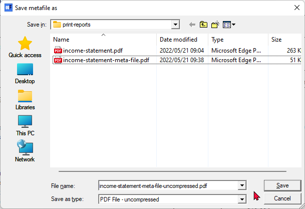
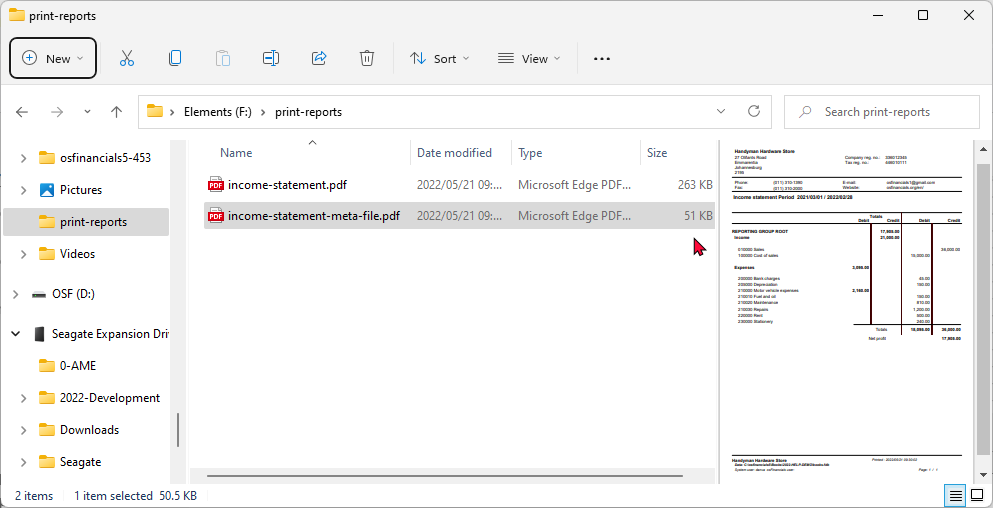
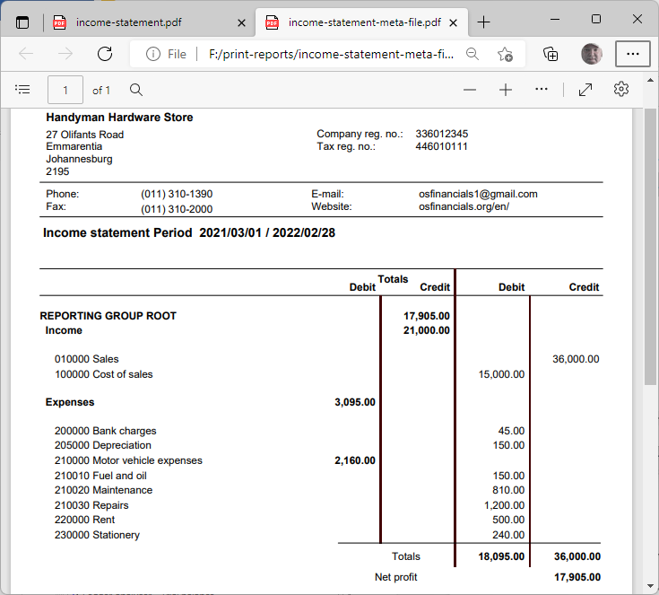
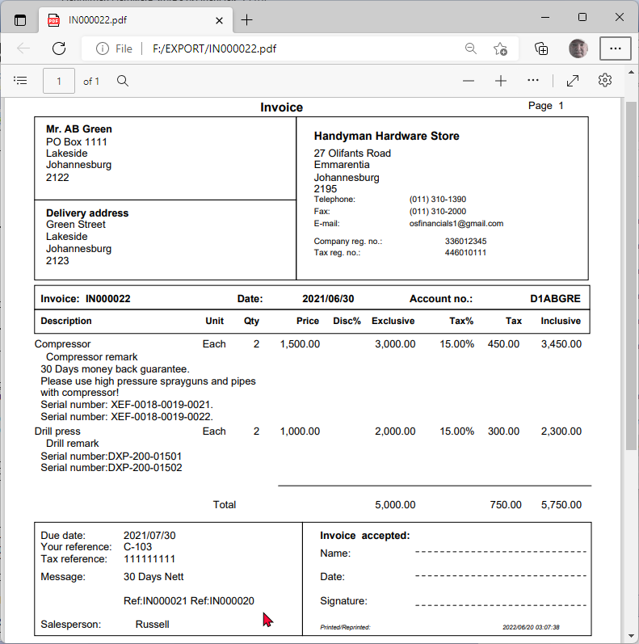

Reportman output - Save metafile as PDF
"PDF" is the acronym for "Portable Document Format". The "PDF" file format is generally used to save files that cannot be modified. The "PDF files can be saved as a hardcopy of reports and document layout files can be saved as a hardcopy for audit and record purposes.
PDF files can be easily shared across all devices (e.g. desktops, laptops, mobile devices (tablets, cellular phones, etc.). It is also compatible and readable with the default pdf app or pdf reader app on all operating system platforms (e.g. Windows, Linux, Mac, Android, etc.).
You may also open saved PDF files on your system, in the your system's associated default Web browser , e.g. Google Chrome, Firefox, Microsoft Edge, etc.
PDF files may easily be sent via e-mail, read, printed on demand according to your own requirements; or the recipient's requirements.
Save metafile options
To save reports or document layout files as a PDF file:
- On the "Reportman print preview" screen, select Save (Ctrl+S)
 - This will launch the “Save metafile as” screen.
- This will launch the “Save metafile as” screen.

- Select the directory (folder) where you need to save this file, if necessary.
- Enter a file name.
- Select the "PDF File – compressed" (default option) or the "PDF File – uncompressed" file type.
- Click Save.
|
|
You may select the compressed or uncompressed PDF file types "PDF File – compressed" (default) - The file size and quality may be reduced (smaller) for sending these files via e-mail, etc. "PDF File – uncompressed" In osFinancials, the average file pdf file size and quality for reports and document layout files, saved to the PDF compressed or PDF uncompressed, is hardly noticeable. |

|
|
The default print (Print (Ctrl+P) option where the “Print” screen is set to "Microsoft Print to PDF" option is much smaller in size (263K) than the "PDF File – compressed" size (51K) or "PDF File – uncompressed" size (59K) PDF file types "Save metafile as" option. |
The PDF file format may be selected for all reports and document layout files to external recipients.
Income statement - PDF
If the saved file does not open automatically; or if you need to open it at a later stage; you may open the file in your system's file explorer.

An example of the "Income statement" saved as a PDF file, opened in "Microsoft Edge", is as follows:

The PDF file format may be selected for all reports and document layout files to external recipients
Irrespective of the operating systems and apps your debtors (customers / clients) are running, Invoices, Credit notes, Quotes and Statements may be easily shared and sent to these recipients.
Irrespective of the operating systems and apps your creditors (suppliers / vendors) are running, Purchase, Supplier returns, Orders and Remittance advises may be easily shared and sent to these recipients.
Document layout file - PDF
An example of an "Invoice" saved as a PDF file, opened in "Microsoft Edge", is as follows:
